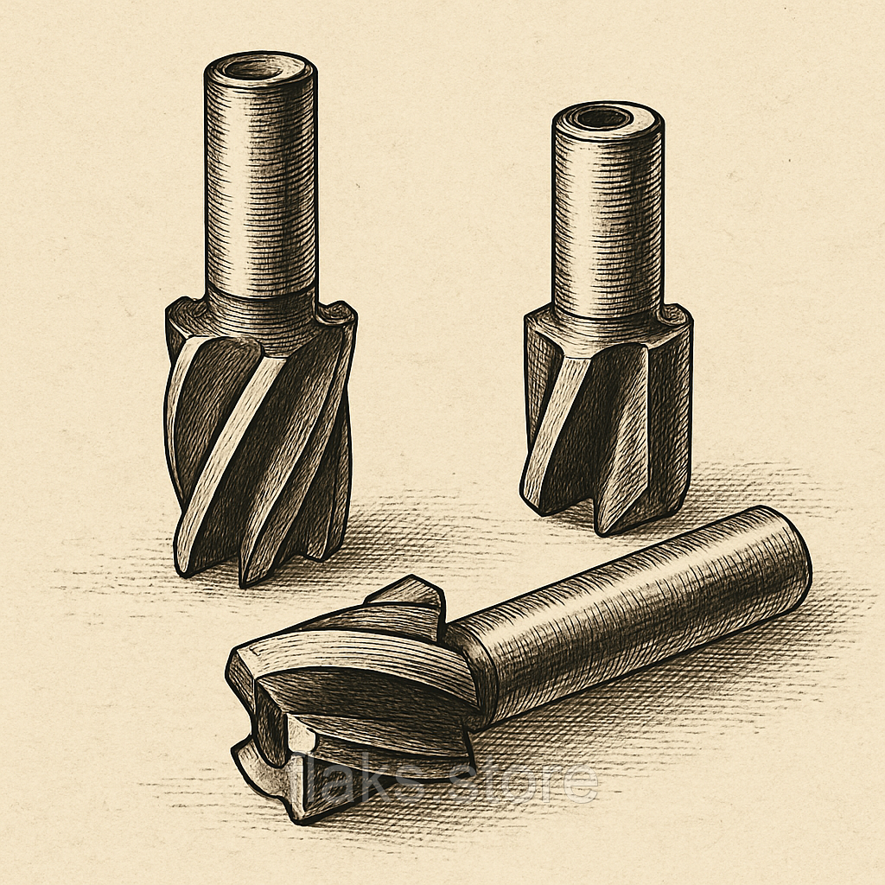

Фрези кінцевіФрезы концевые
Фреза шпонкова к\х ф 44.2 КМ4 190х60 внутрізавод Р6М5Фреза шпоночная к\х ф 44.2 КМ4 190х60 внутризавод Р6М5
ОписОписание
Фреза шпонкова к\х ф 44.2 КМ4 190х60 внутрізавод Р6М5 — професійний металорізальний інструмент для фрезерування пазів, уступів, контурів і кишень. Основні параметри: діаметр Ø 44.2 мм, розмір 190×60 мм та КМ4. Виготовлено з матеріалу швидкорізальна сталь Р6М5, що забезпечує стійкість різальної кромки при обробці конструкційних і легованих сталей, чавуну та кольорових металів. В наявності 2 шт. на складі у Харкові. Ціна 2550 грн без ПДВ. Опт і роздріб, відправлення по всій Україні. Замовлення від 2 000 грн.Фреза шпоночная к\х ф 44.2 КМ4 190х60 внутризавод Р6М5 — профессиональный металлорежущий инструмент для фрезерования пазов, уступов, контуров и карманов. Основные параметры: диаметр Ø 44.2 мм, размер 190×60 мм и КМ4. Изготовлен из материала быстрорежущая сталь Р6М5, что обеспечивает стойкость режущей кромки при обработке конструкционных и легированных сталей, чугуна и цветных металлов. В наличии 2 шт. на складе в Харькове. Цена 2550 грн без НДС. Опт и розница, отправка по всей Украине. Заказ от 2 000 грн.
ХарактеристикиХарактеристики
| Тип інструментуТип инструмента | Фреза кінцеваФреза концевая |
|---|---|
| КатегоріяКатегория | Фрези кінцевіФрезы концевые |
| Діаметр ØДиаметр Ø | 44.2 мм44.2 мм |
| РозміриРазмеры | 190×60 мм190×60 мм |
| МатеріалМатериал | Р6М5Р6М5 |
| ХвостовикХвостовик | конічнийконический |
| Конус МорзеКонус Морзе | КМ4КМ4 |
| СтанСостояние | новийновый |
| Код товаруКод товара | FLK-07686FLK-07686 |
| НаявністьНаличие | 2 шт.2 шт. |